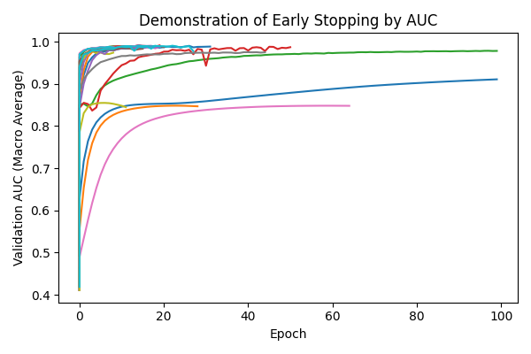
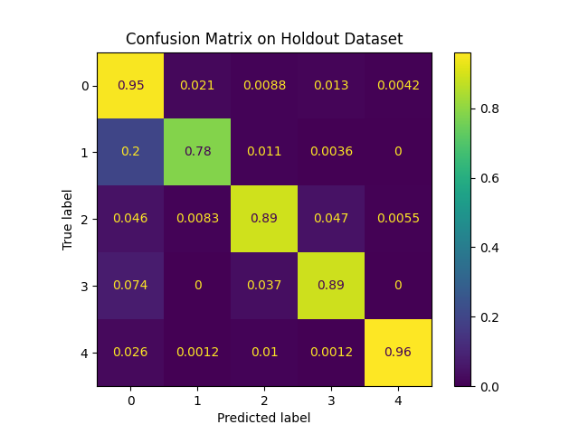

Task II: Model Training and Fine Tuning¶
Model¶
Code: https://github.com/A-Telfer/telfer-ecg-heartbeat-categorization-task/blob/master/src/models/train_model.py
We implemented a simple Model using stacked linear layers (size=2048) in Pytorch and Lightning. Despite it’s simplicity, from previous experience I know Linear models have worked well with real-world EEG datasets which similar properties. Linear models are also often faster than convolution models (can depend on parameters such as stride), though they are much larger.
An alternative approach may have been to use a 1D Convolutional model. One of the main strengths of convolutional models is their ability to extract spatial and frequency information, however we have already moved towards this by using wavelet features. Convolutional models are often slower and can be harder to restructure when changing the feature space.
Another approach may have been to use an LSTM or other recurrent model, however these are considerably slower to train/infer with and can struggle with longer signals (similarly attention/transformer networks can struggle with longer signals).
class LinearModel(pl.LightningModule):
def __init__(
self,
learning_rate=1e-3,
momentum=0.9,
weight_decay=1e-3,
input_size=187,
output_size=5,
num_hidden_layers=1,
hidden_layer_size=2048,
):
super().__init__()
self.learning_rate = learning_rate
self.momentum = momentum
self.weight_decay = weight_decay
hidden_layers = []
for _ in range(num_hidden_layers):
hidden_layers.append(
torch.nn.Linear(hidden_layer_size, hidden_layer_size))
hidden_layers.append(torch.nn.LeakyReLU())
torch.nn.Dropout(),
self._model = torch.nn.Sequential(
torch.nn.Linear(input_size, hidden_layer_size),
torch.nn.LeakyReLU(),
*hidden_layers,
torch.nn.LeakyReLU(),
torch.nn.Linear(hidden_layer_size, output_size),
)
...
Hyper Parameter Optimization¶
Code: https://github.com/A-Telfer/telfer-ecg-heartbeat-categorization-task/blob/master/src/models/hparam_opt.py
We performed hyper-parameter optimization on the following parameters simultaneously using optuna and mlflow:
Learning Rate:
Range: [1e-1, 1e-5]
Sampling: Log uniform
Momentum:
Values: [0, 0.99]
Sampling: Uniform
Weight Decay
Values: [0, 1e-2]
Sampling: Log uniform
Model Hidden Layers:
Values: {1,2,3,4}
Sampling: Categorical
Optimization was performed using Tree of Parzen Estimators (TPE) implemented in the optuna package. For demonstrative purposes, we only performed 20 runs. Each run consisted of up to 100 training epochs (shorter depending on the early-stopping callback).
The training dataset was balanced during the augmentation stage, so we optimized using a standard unweighted crossentropy loss. The validation, test, and holdout datasets were not balanced however. Therefore to evaluate models we used the AUROC (with a macro average such that class was given equal weighting).
The optimal parameters that were found after 20 runs were: learning_rate=0.0053, num_layers=4, momentum=0.969, weight_decay=0.0001
Given that we were optimizing several values at once, 20 runs is unlikely to be enough. An improvement could have been to optimize one parameter at a time, which pytorch has previously used for achieving state-of-the-art performance on imagenet: https://pytorch.org/blog/how-to-train-state-of-the-art-models-using-torchvision-latest-primitives/)
Overfitting and Underfitting¶
To prevent overfitting we used a weight decay, dropout layers after each hidden layer, and implemented our own early stopping callback with checkpointing.
Including the model-size (number of hidden layers) in the hyper-parameter optimization also served to help avoid overfitting/underfitting as increasing the number of parameters in the model can help to prevent underfitting, and decreasing the number of parameters can help to prevent overfitting.
Early Stopping Callback¶
We implemented early stopping callback that stops the training and loads the best model. The rationale behind early stopping is simple, once the model stops improving on the validation set then the model is likely beginning to overfit to the training dataset. We add patience to allow for the model to exit suboptimal minimas that cause the validation metric to worsen temporarily.

Figure 4: Evaluation runs show early stopping after validation AUC plateaus.
lass MetricsCallback(Callback):
def __init__(self, mlflow_run, num_classes=5, early_stopping_patience=5):
super().__init__()
self.logger = logging.getLogger(__name__)
# Define metrics
...
self.auroc_macro = torchmetrics.AUROC(
task="multiclass", num_classes=num_classes, average="macro"
)
# Early stopping
self.stop_on_next_train_epoch_end = False
self.early_stopping_last_value = None
self.early_stopping_patience = early_stopping_patience
self.early_stopping_count = early_stopping_patience
self.early_stopping_checkpoint = f"{mlflow_run.info.run_id}_best.pt"
...
def on_train_epoch_end(self, trainer, pl_module):
...
# Early stopping
if self.stop_on_next_train_epoch_end:
trainer.should_stop = True
pl_module._model = torch.load(self.early_stopping_checkpoint)
os.remove(self.early_stopping_checkpoint)
self.logger.info(
"early stopping triggered, returning best checkpoint"
)
def on_validation_epoch_end(self, trainer, pl_module):
auroc = ...
# Early stopping
if (
self.early_stopping_last_value is None
or auroc > self.early_stopping_last_value
):
self.early_stopping_last_value = auroc
self.early_stopping_count = self.early_stopping_patience
# Save best checkpoint
torch.save(pl_module._model, self.early_stopping_checkpoint)
else:
self.early_stopping_count -= 1
if self.early_stopping_count == 0:
self.stop_on_next_train_epoch_end = True
Evaluation¶
Code: https://github.com/A-Telfer/telfer-ecg-heartbeat-categorization-task/blob/master/notebooks/4.0-telfer-explore-results.ipynb
We used the validation dataset for early stopping, and the testing dataset was used to select a model for hyper-parameter optimization, so evaluation was run on a separate holdout set. (Performance was higher on the testing dataset as expected and is compared in the next section)
On the holdout set, the model had an AUROC of 0.9833. It’s average accuracy across classes was 0.8961, however the micro accuracy on all test cases (not accounting for class imbalance) was 0.9445 due to its high performance on the over-represented classes.

Figure 5: Confusion Matrix results on the holdout dataset normalized over the True label. We see that the model struggles the most to classify Class 1, often confusing it for Class 0.
There are many ways we may improve the model, here are a few examples
The model may be overly simplistic. Even a basic convolutional neural networks may provide better performance as they are well suited to tasks when data is spatially or temporally related.
The learning rate can be decreased overtime, either using a learning rate callback or a learning rate scheduler.
The number of runs for hyper-parameter optimization was very small compared to the number of parameters being optimized. Increasing the runs, or optimizing fields individually is likely to improve results.
The hyper-parameter optimization can be expanded to compare different features, augmentation approaches, and model types.
I think contrastive learning (perhaps with Triplet-loss) may provide interesting features and improve performance